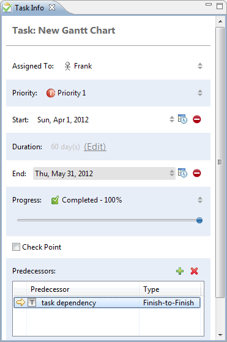
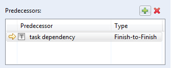
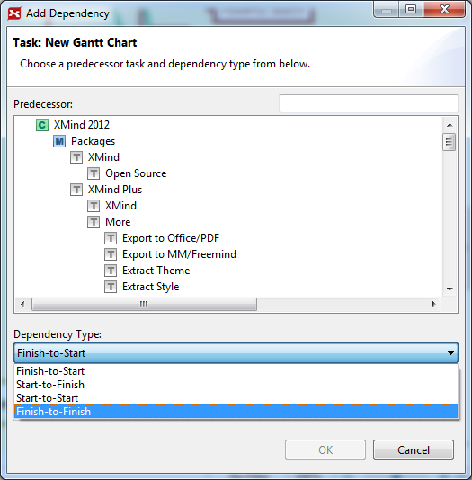

タスク情報
XMind Pro is not good at clarifying thinking and managing complex information, but also project management. (XMind Proは、プロジェクト管理だけでなく、思考を明確にし、複雑な情報を管理することが、得意ではありません。？？）タスク情報ビューによって、より詳細な情報をタスクに追加できます。それはよりよいマネージメントによって、我々を助けます。実際には、このタスクの責任者、開始/終了日、処理時間、優先順位、先行タスク、進捗状況をを追加できます。
- トピックを選択し、メニューの[表示]→[タスク情報]を選択してタスク情報ビュー を開きます。
- ビューで次の情報の参照と変更ができます。
- タスク: これは選択したタスクの内容です。
- 担当者: このタスクを担当している人を、選択するか入力します。
- 開始/終了: タスクの適切な日付を選択します。必要であれば、時刻を設定することもできます。
- 処理時間： このタスクを完了するのに必要な日数が表示されます。直接入力することもできます。
- 進捗状況 : スライドを移動して、タスクの進捗状況を変更します。
- 優先度: ドロップ ダウンリストから、このタスクの適切な優先度レベルを選択します。
- 先行タスク: プラスボタンをクリックして、選択したタスクに先行タスクを追加します。
- チェック ポイント: チェック ボックスを有効にすると、ガント チャートビューで進捗状況が表示されます。

タスクの依存関係プロジェクトでは、タスク間の依存関係を設定したいということがあります。XMind では、これをいくつかの簡単な手順で実現できます。
- タスク A を選択します。
- メニューから[表示]→[タスク情報]を選択して、タスク情報ビューを開きます。
- 先行タスク項目までスクロールし、プラスボタンをクリックします。

- 依存関係を追加ダイアログ ボックスで、タスク B を選択します。
- 依存関係の種類を確認します。
- 終了 − 開始 タスク A はタスク B を終了するまで開始できません。
- 開始 − 終了 タスク A はタスク B が開始されるまで終了できません。
- 開始 − 開始 タスク B が開始されるまで開始できません。
- 終了 − 終了 タスク A はタスク B を終了するまで終了できません。
- "OK" をクリックして終了します。
タスクの依存関係ダイアログ 
メモ:ガントチャート画面に、タスク情報ビューに追加したすべての情報が表示されます。